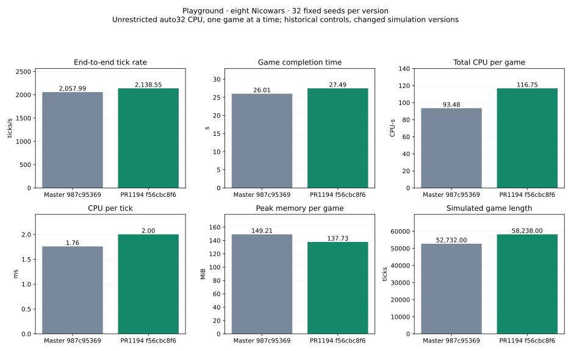

32 fixed seeds, 128×128 Playground, eight Nicowars, one unrestricted auto32 CPU game at a time. Release GCC13 builds; same commands, map bytes and shared library hashes.
Previous: 987c953698bb3f0bfd1078184773075ba3313091
Current: f56cbc8f624dd35c2066cce1aad51d0d9ada25cf
| Mean per completed game | Previous | Current | Change | Paired 95% interval |
|---|---|---|---|---|
| End-to-end tick rate (ticks/s) | 2,057.993 | 2,138.548 | +3.91% | [+1.43%, +6.51%] |
| Game completion time (s) | 26.014 | 27.486 | +5.66% | [-8.19%, +21.64%] |
| Total CPU per game (CPU-s) | 93.480 | 116.748 | +24.89% | [+9.48%, +42.66%] |
| CPU per tick (ms) | 1.761 | 2.003 | +13.79% | [+10.34%, +17.25%] |
| Peak memory per game (MiB) | 149.208 | 137.730 | -7.69% | [-10.07%, -5.20%] |
| Simulated game length (ticks) | 52,732.000 | 58,238.000 | +10.44% | [-2.81%, +25.84%] |
| Recorded orders (orders) | 22,249.219 | 24,268.094 | +9.07% | [-1.69%, +21.16%] |
Completion counts: {'previous': {'winners': 32, 'caps': 0}, 'current': {'winners': 32, 'caps': 0}}. Winner and finishing tick match on 0/32 paired completed seeds.

Results, intervals and raw audit · Earlier historical references